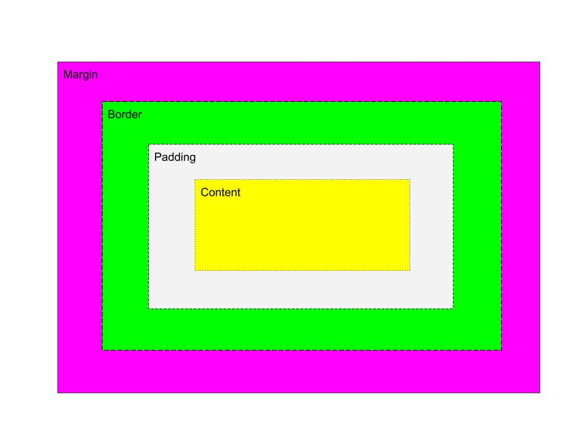

What is a box?
-
A box is described as a square or rectangular figure that has a name value of width and height, also contains text, image, etc.
-
An essay of a box model
-
A box model is a box that wraps every single html element and it shows all of different parts of a box that it contains such us margin, border, padding and content. Those bunch of parts of a box work together gives us the box model. Each parts of box has width and height properties htat have the same starting value (0px) from the top left angle of each box.
A diagram of a box model

Description
Keywords:
-
A content box
is the box which located at the center of the box model. It contains text, image, or other media content in the element.
-
A padding box
is the box that wraps the content box, so the space between box's content is called padding.
-
A border box
is a box which wraps the padding and the content box.
Properties:
-
A border;
Border is a shorthand for border width, border style, and border color. Boreder property allows us to contorle or specify for an element's height and width.
-
A margin;
Margin property is a shorthand for margin top, margin right, margin left and margin bottom. It gives an accessibility to specify the margin space on each sides of an element.
-
A padding;
Padding property behaves like a margin property but it is for specifying the padding space on each sides of an element. It is a shorthand for padding top, padding left, padding right, and padding bottom.
-
A display;
According to MDN display property, it defines whether an element is treated as a block or inline element and the layout used for its children, such as flow layout, grid or flex.
-
A box sizing;
Box sizing property is taking care of how the total width and height of an element is calculated.
Answer of the questions
-
When two differently sized margins of two different boxes collide, they collaps and combine together also the bigest of the two margin which the content takes.
-
The formula for working out an element's visual width is border plus margin two times plus the content. It is different from using box-sizing: border-box; on the element because the box-sizing:border-box; only takes whatever value is in the width element.
-
The difference between `display` values `inline`, `inline-block`, and `block` is that inline block allows us to set a width and height on the element and in display inline, top and bottom margins seem to be not respected wheras in display inline block, they are.